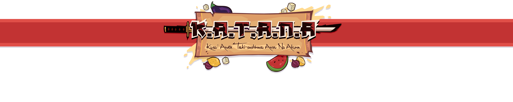

K.A.T.A.N.A
Description
Arnaud Claudet - Game Artist
Thomas Depraz-Depland - Game Programmer
Maëlle Hanneton - Game Artist
Louis Lefebvre - Game Designer
Edouard Murat - Game Programmer
Aliénor Tignon - Game Artist
Tom Watteau - Game Designer
Context
Katana is the first project where I used Unity. The challenge was to make a roguelike vertical slice, with pixel-art graphics. Our group was composed of 3 game artists and 4 game designers. Together, we were free to create the universe of the game and the gameplay mechanics.
About K.A.T.A.N.A
Katana is a roguelike game where you play as a ninja who always wanted to be a cook.
Unfortunately the restaurant you bought is haunted by evil vegetables.
You have to slay them in order to bring back peace to your canteen.
During each run you can collect ingredients from the vegetables you killed.
This allows you to cook various meals when you return to the hub.
Each meal makes you stronger but it consumes some of the ingredients you collected.
My Work
At first, I helped design the various mechanics of the game before
I started prototyping using the very detailed game design document written by my colleagues.
Since it was my first project using Unity, I wanted to explore
as much of the game engine as possible. I created the player controller,
his movement, his attacks...
I worked on some of the enemies, their attack pattern…
I also created the cooking system, which used the ingredients collected during the run.
I integrated a lot of the graphics using the Animator
with the help of the game artists. Finally, I worked a lot on the game’s UI,
especially the one for the cooking system.
Conclusion
I had a lot of fun making this project and I am very proud
of the result even though we had to cut some content.
We had a really good synergy together and it created an environment
where we felt safe to create, and fail sometimes...
If I had to do it again, I would totally work differently since
I learned a lot on this and other projects.
This project really helped me to get better at C# programming
and get a bit more confident in my skills.